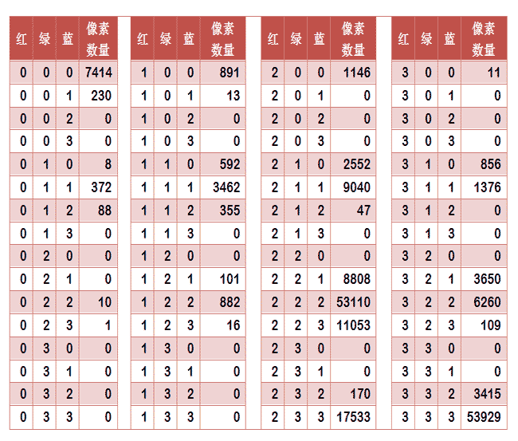
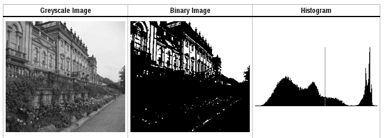

参考阮一峰老师的博客:相似图片搜索的原理 相似图片搜索的原理2
我们用过谷歌以图识图, 还有些搜索引擎能找出照片的背景. 那这些技术背后的原理是什么呢? 计算机怎么知道两张图片相似呢?
方法1
这里的关键技术叫做”感知哈希算法” (Perceptual hash algorithm), 它的作用是对每张图片生成一个”指纹”(fingerprint)字符串, 然后比较不同图片的指纹. 结果越接近, 就说明图片越相似.
第一步 缩小尺寸
将图片缩小到8x8的尺寸, 总共64个像素, 这一步的作用是去除图片的细节, 只保留结构, 明暗等基本信息. 摒弃不同尺寸,比例带来的图片差异.
第二步 简化色彩
将缩小后的图片, 转为64级灰度. 也就是说, 所有像素点总共有64种颜色.
第三步 计算平均值
计算所有64个像素的灰度平均值
第四步 比较像素的灰度
将每个像素的灰度, 与平均值进行比较. 大于或等于平均值, 记为1, 小于平均值, 记为0.
第五步, 计算哈希值
将上一步的比较结果, 组合在一起, 就构成了一个64位的整数, 就是这张的图片的指纹. 组合的次序并不重要, 只要保证所有的图片都采用相同次序就行了.
得到指纹后, 就可以对比不同的图片, 看看64位中有多少位是不一样的. 在理论上, 等同于计算汉明距离(Hamming distance). 如果不相同的数据位不超过5, 就说明两张图片很相似. 如果大于10, 就说明是两张不同的图片.
这种算法的优点是简单快速, 不受图片大小缩放的影响, 缺点是图片的内容不能变更. 如果在图片上加几个文字, 就认不出来了. 所以它的最佳用途是根据缩略图, 找出原图.
还有一些更强大pHash算法和SIFT算法, 它们能够识别图片的变形. 只要变形程度不超过25%, 他们就能匹配原图. 这些算法虽然更加复杂, 但是原理与上面的简便算法是一样的, 就是先将图片转化成Hash字符串, 然后进行比较.
颜色分步法
每张图片都可以生成颜色分布的直方图. 如果两张图片的直方图很接近, 就可以认为它们很相似.
任何一种图片都是由RGB构成, 所以上图共有4张直方图(三原色+最后合成的直方图).
如果每种原色都可以取256个值, 那么整个颜色空间共有1600万种颜色. 针对这1600万种颜色比较直方图, 计算量太大. 因此采用简化方法, 将0-255分为四个区: 0-63, 64-127, 128-191, 192-255. 这意味着红绿蓝分别有4个区, 总共可以构成64种组合.
任何一种颜色必然属于这64中组合中的一种, 这样就可以统计每一种组合包含的像素数量.

上面是某张图片的颜色分布表, 将表中最后一栏提取出来, 组成一个64维向量(7414, 230,0,0,….,108,3415,53929).这个向量就是这张图片的特征值.或者指纹.
内容特征法
除了颜色构成, 还可以从从比较图片内容的相似性入手。
首先，将原图转成一张较小的灰度图片，假定为50x50像素。然后，确定一个阈值，将灰度图片转成黑白图片。


如果两张图片很相似，它们的黑白轮廓应该是相近的。于是，问题就变成了，第一步如何确定一个合理的阈值，正确呈现照片中的轮廓？
显然，前景色与背景色反差越大，轮廓就越明显。这意味着，如果我们找到一个值，可以使得前景色和背景色各自的”类内差异最小”（minimizing the intra-class variance），或者”类间差异最大”（maximizing the inter-class variance），那么这个值就是理想的阈值。
1979年，日本学者大津展之证明了，”类内差异最小”与”类间差异最大”是同一件事，即对应同一个阈值。他提出一种简单的算法，可以求出这个阈值，这被称为“大津法”（Otsu’s method）。下面就是他的计算方法。
假定一张图片共有n个像素，其中灰度值小于阈值的像素为 n1 个，大于等于阈值的像素为 n2 个（ n1 + n2 = n ）。w1 和 w2 表示这两种像素各自的比重。
1 | w1 = n1 / n |
再假定，所有灰度值小于阈值的像素的平均值和方差分别为 μ1 和 σ1，所有灰度值大于等于阈值的像素的平均值和方差分别为 μ2 和 σ2。于是，可以得到
1 | 类内差异 = w1(σ1的平方) + w2(σ2的平方) |
可以证明，这两个式子是等价的：得到”类内差异”的最小值，等同于得到”类间差异”的最大值。不过，从计算难度看，后者的计算要容易一些。
下一步用”穷举法”，将阈值从灰度的最低值到最高值，依次取一遍，分别代入上面的算式。使得”类内差异最小”或”类间差异最大”的那个值，就是最终的阈值。

有了50x50像素的黑白缩略图，就等于有了一个50x50的0-1矩阵。矩阵的每个值对应原图的一个像素，0表示黑色，1表示白色。这个矩阵就是一张图片的特征矩阵。
两个特征矩阵的不同之处越少，就代表两张图片越相似。这可以用”异或运算”实现（即两个值之中只有一个为1，则运算结果为1，否则运算结果为0）。对不同图片的特征矩阵进行”异或运算”，结果中的1越少，就是越相似的图片。